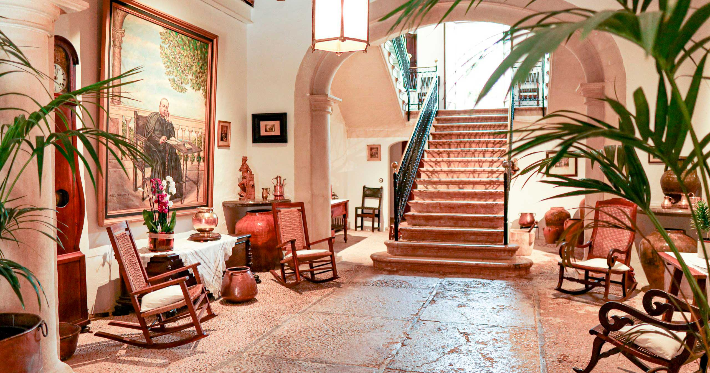

La Casa de Costa i Llobera a Pollença és un enclavament significatiu en la rica història cultural de Mallorca. Situada al pintoresc municipi pollencí, aquesta casa va ser la llar del cèlebre poeta, una figura emblemàtica de la literatura catalana del segle XIX.


La casa natal de Miquel Costa i Llobera , coneguda com Can Costa , és un espai que respira història i cultura en cada racó. En el seu interior, podem recórrer diversos ambients que conserven l’encant i l’ambient de l’època, transportant-nos a un temps en què el poeta va viure i es va inspirar.